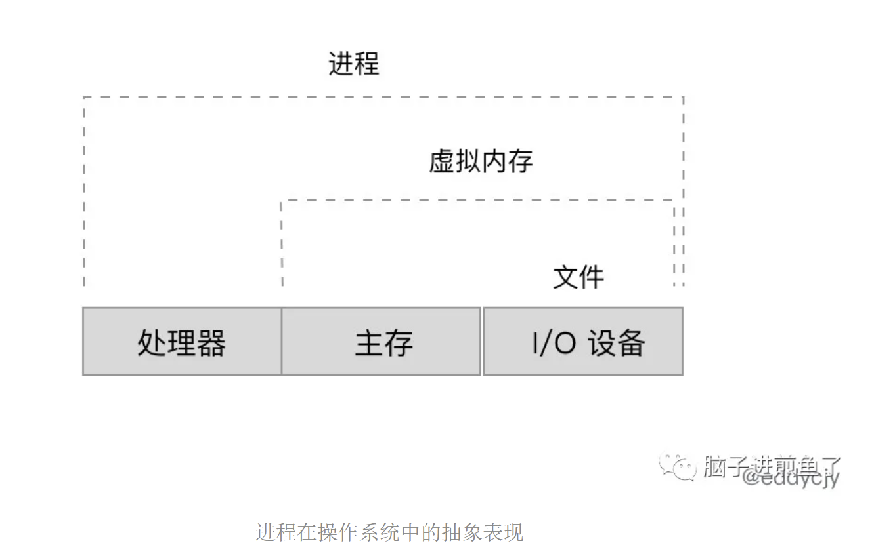
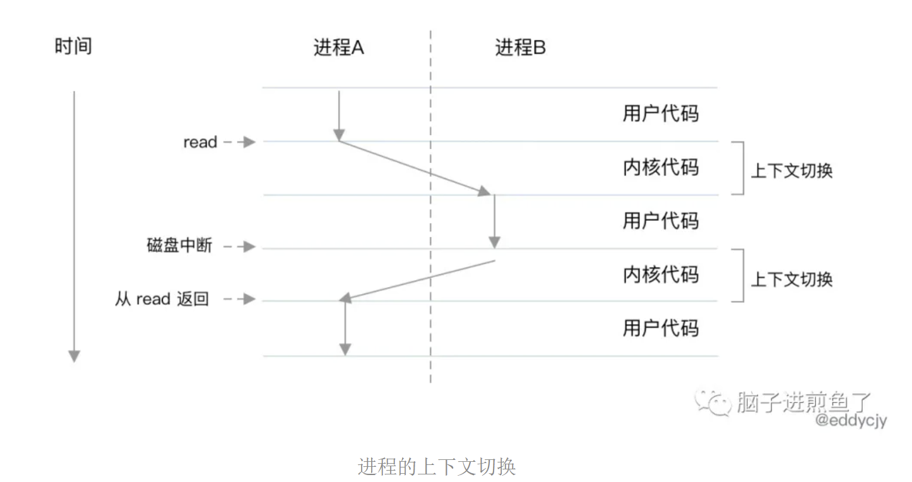
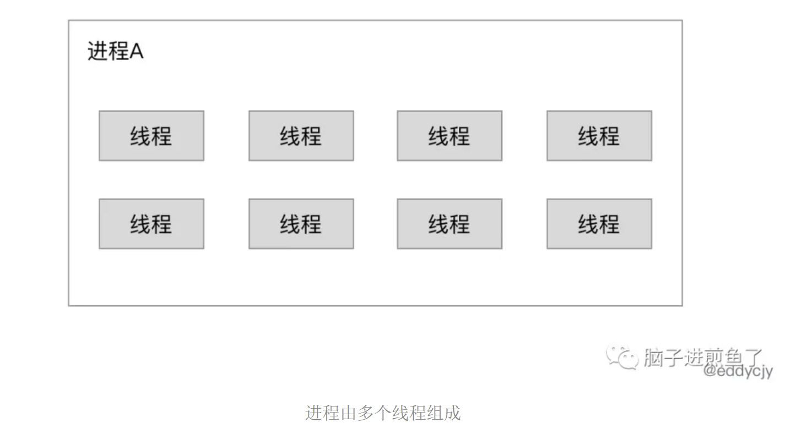

既要理解线程，还要讲解协程，并且诠释两者间的区别，但是由于提到线程，就必然涉及进程，因此本文将会同时梳理介绍 “进程、协程、协程” 三者的随笔知识，希望能引发大家的一些思考。
吸鱼之路开始。
进程
进程是什么
进程是操作系统对一个正在运行的程序的一种抽象，进程是资源分配的最小单位。

进程在操作系统中的抽象表现为什么有进程
为什么会有 ”进程“ 呢？说白了还是为了合理压榨 CPU 的性能和分配运行的时间片，不能 “闲着“。
在计算机中，其计算核心是 CPU，负责所有计算相关的工作和资源。单个 CPU 一次只能运行一个任务。如果一个进程跑着，就把唯一一个 CPU 给完全占住，那是非常不合理的。
那为什么要压榨 CPU 的性能？因为 CPU 实在是太快，太快，太快了，寄存器仅仅能够追的上他的脚步，RAM 和别的挂在各总线上的设备则更是望尘莫及。
多进程的缘由
如果总是在运行一个进程上的任务，就会出现一个现象。就是任务不一定总是在执行 ”计算型“ 的任务，会有很大可能是在执行网络调用，阻塞了，CPU 岂不就浪费了？

进程的上下文切换这又出现了多进程，多个 CPU，多个进程。多进程就是指计算机系统可以同时执行多个进程，从一个进程到另外一个进程的转换是由操作系统内核管理的，一般是同时运行多个软件。
线程
有了多进程，想必在操作系统上可以同时运行多个进程。那么为什么有了进程，还要线程呢？
原因如下：
- 进程间的信息难以共享数据，父子进程并未共享内存，需要通过进程间通信（IPC），在进程间进行信息交换，性能开销较大。
- 创建进程（一般是调用
fork方法）的性能开销较大。
大家又把目光转向了进程内，能不能在进程里做点什么呢？

进程由多个线程组成一个进程可以由多个称为线程的执行单元组成。每个线程都运行在进程的上下文中，共享着同样的代码和全局数据。
多个进程，就可以有更多的线程。多线程比多进程之间更容易共享数据，在上下文切换中线程一般比进程更高效。
原因如下：
线程之间能够非常方便、快速地共享数据。
- 只需将数据复制到进程中的共享区域就可以了，但需要注意避免多个线程修改同一份内存。
创建线程比创建进程要快 10 倍甚至更多。
- 线程都是同一个进程下自家的孩子，像是内存页、页表等就不需要了。
协程是怎么回事
协程是什么
协程（Coroutine）是用户态的线程。通常创建协程时，会从进程的堆中分配一段内存作为协程的栈。
线程的栈有 8 MB，而协程栈的大小通常只有 KB，而 Go 语言的协程更夸张，只有 2-4KB，非常的轻巧。
协程的诞生
根据维基百科的说法，马尔文·康威于 1958 年发明了术语 “coroutine” 并用于构建汇编程序，关于协程最初的出版解说在 1963 年发表。
也就是历史上是先有的 “协程”，再有的 “线程”，线程是在在协程的基础上添加了栈等功能后扩展出来的。
但为什么一开始协程没有火起来呢？这个比较难考证，大概率还是与 60 年前的计算机时代背景有关。
而如今人们把协程调度的逻辑更进一步抽象为 “等 IO，让出，IO 完毕”，在此基础上人们发现协程的方式能解决多线程环境下很多代码逻辑 “混乱”。
协程的优势
既然线程似乎已经很好地填补了进程的遗憾，那怎么又出来了一个 “协程”，难道是重复造轮子吗？
协程的优势（via InfoQ @八两）如下：
- 节省 CPU：避免系统内核级的线程频繁切换，造成的 CPU 资源浪费。好钢用在刀刃上。而协程是用户态的线程，用户可以自行控制协程的创建于销毁，极大程度避免了系统级线程上下文切换造成的资源浪费。
- 节约内存：在 64 位的Linux中，一个线程需要分配 8MB 栈内存和 64MB 堆内存，系统内存的制约导致我们无法开启更多线程实现高并发。而在协程编程模式下，可以轻松有十几万协程，这是线程无法比拟的。
- 稳定性：前面提到线程之间通过内存来共享数据，这也导致了一个问题，任何一个线程出错时，进程中的所有线程都会跟着一起崩溃。
- 开发效率：使用协程在开发程序之中，可以很方便的将一些耗时的IO操作异步化，例如写文件、耗时 IO 请求等。
协程本质上就是用户态下的线程，所以也有人说协程是 “轻线程”，但我们一定要区分用户态和内核态的区别，很关键。
总结
归归根到底，在日常或面试中遇到 “什么是协程，协程和线程的区别和联系？” 这类问题时，面试者常规会把进程、线程、协程都介绍一遍。
为了方便记忆和诠释，推荐大家结合故事来讲会比较好，这一块可以参考阮一峰大神翻译的《进程与线程的一个简单解释》，会带来不少好感。
而最关键的部分，在于协程和线程的区别和联系是什么？
我们可以通过文章中的介绍，从协程 -> 线程的历史进程来说明。接着进一步对比协程和线程两者的优势和缺点，就能比较好的诠释区别和联系了。
更优秀的部分，可以诠释完基本概念和区别后，进一步延伸都你所面试的岗位，例如是 Go 语言，就可以介绍 Go 语言的协程的具体应用和实现。
毕竟，Go 语言可以轻轻松松开数十万个协程，毫无波澜。这样能够更好的体现你对协程、线程的知识深度和广度应用，而不是单纯的背概念。
参考
- 线程和进程的区别是什么？
- 有了多线程，为什么还要有协程？
- 进程与线程的一个简单解释